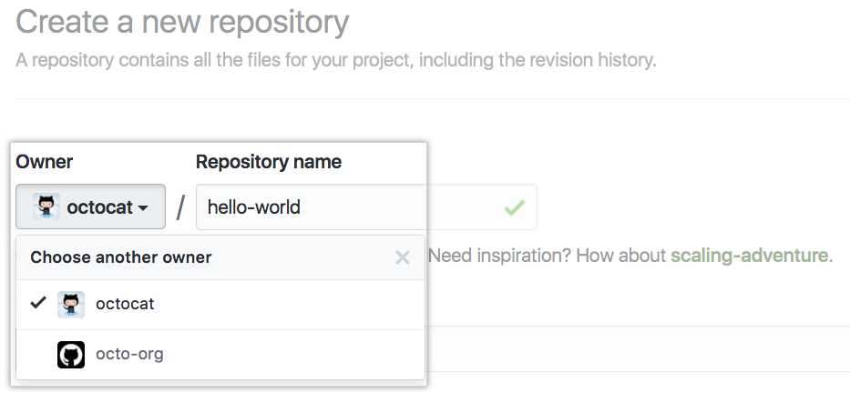
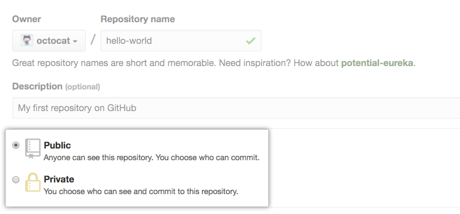
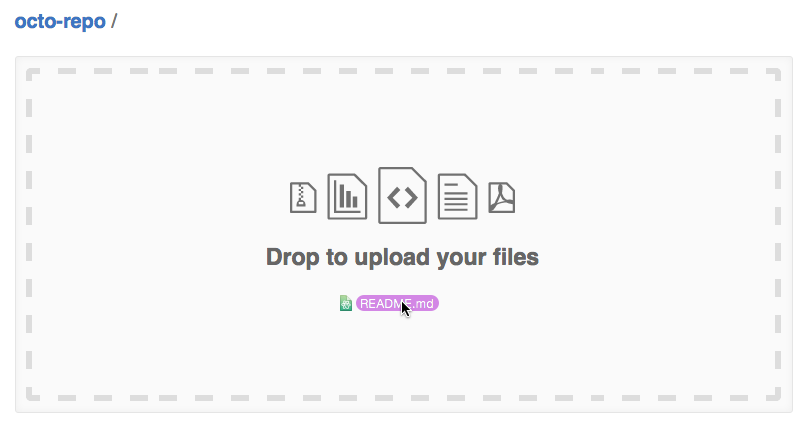
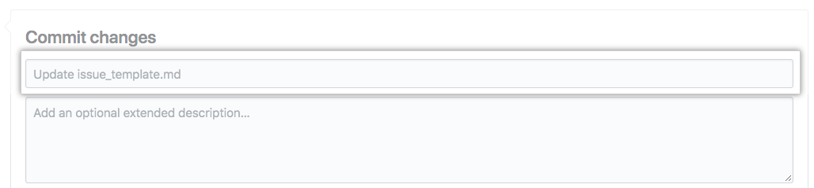
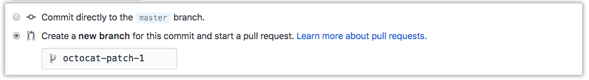

Een nieuwe repository maken
U kunt een nieuwe repository maken op uw persoonlijke account of een organisatie waar u voldoende rechten voor heeft.
-
Klik in de rechterbovenhoek van een pagina op (+), en klik vervolgens op (New repository).

-
Selecteer in de vervolgkeuzelijst (Owner) het account waarop u de repository wilt maken.
 -
Typ een naam voor uw repository en een optionele beschrijving.

-
Kies ervoor om de repository openbaar of privé te maken. Openbare opslagplaatsen zijn zichtbaar voor het publiek, terwijl privé-opslagplaatsen alleen toegankelijk zijn voor jou en de mensen met wie je ze deelt
 -
Er zijn een aantal optionele items waarmee u uw repository vooraf kunt vullen. Als je een bestaande repository importeert naar GitHub Enterprise, kies dan geen van deze opties, omdat je een samenvoegingsconflict kunt introduceren. U kunt ervoor kiezen om later nieuwe bestanden toe te voegen via de opdrachtregel.
-
U kunt een README maken, een document dat uw project beschrijft.
-
U kunt een .gitignore-bestand maken, een set negeerregels.
-
-
Als je klaar bent, klik je op (Create repository).
Een bestand toevoegen aan een repository
Je kunt een bestaand bestand uploaden en vastleggen in een GitHub-repository. Sleep een bestand naar een willekeurige directory in de bestandsstructuur en zet het neer, of upload bestanden vanaf de hoofdpagina van de repository
-
Navigeer op GitHub naar de hoofdpagina van de repository.
-
Klik onder de naam van uw repository op Upload files.

-
Sleep het bestand of de map die je wilt uploaden naar je repository naar de bestandsboom.
 -
At the bottom of the page, type a short, meaningful commit message that describes the change you made to the file. You can attribute the commit to more than one author in the commit message
 -
Bepaal onder de velden voor het vastleggen van berichten of u uw vastlegging aan de huidige tak of aan een nieuwe tak wilt toevoegen. Als je huidige branch master is, zou je ervoor moeten kiezen om een nieuwe branch voor je commit aan te maken en dan een pull request te maken.
 -
Klik op Commit changes.